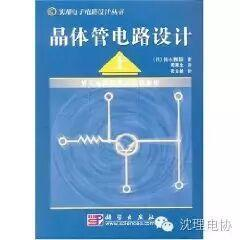
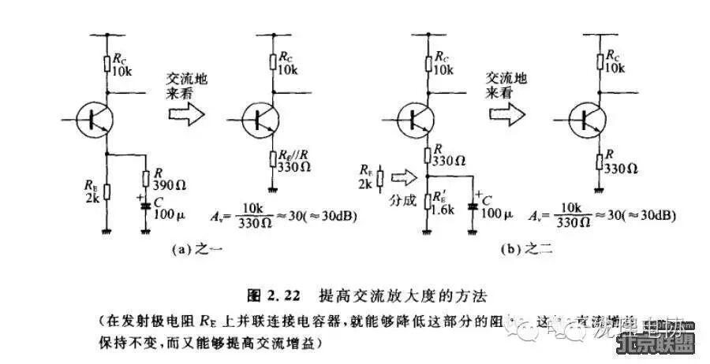

电子从业者不能错过的一本好书
对于学习过模拟电路的人来说，大多数模拟电路的书籍充斥着枯燥的理论，满篇的公式，让人读得昏昏入睡。不过有这样一本书：再版18次，销量40K册；作为技术类书籍，它一直占据前列，被众多的工程师奉为经典。这本书就是铃木雅臣所著《晶体管电路设计》。 
这本书没有复杂公式的推导，而是通过模拟体验放大电路的实验，充分掌握最基本的放大元件，即晶体管的工作原理，从而到达从容设计利用晶体管的分立电路。
周立功先生再其博客中这样推荐《晶体管电路设计》 ：
《晶体管电路设计》最大的特点，在说明或设计晶体管电路时，并没有采用等效电路、负载线等过去常考虑的方法。等效电路和负载线是从事电子电路设计的前辈们为了有助于理解电路的工作原理进行简单的设计而提出来的方法。但以本书作者的经验，即便不采用这些方法，也能掌握电路的工作原理，而且在电路的设计中也没有感到不便之处。在本书上册的结束语中，作者谈到了自己学习的体会，“回想起当年自己初学电子学的情景，那时读过的书大部分都是使用等效电路、负载线以及对理论公式进行说明用的。自己想进行设计时，苦于对电子学本质上不懂，不能进行任何方面的设计，只能跟随着数学式子，仅用头脑来学，而没有真正地掌握。”
感受下书中的电路图，再想想自己读过的关于晶体管电路书中的电路图

编辑/高星华